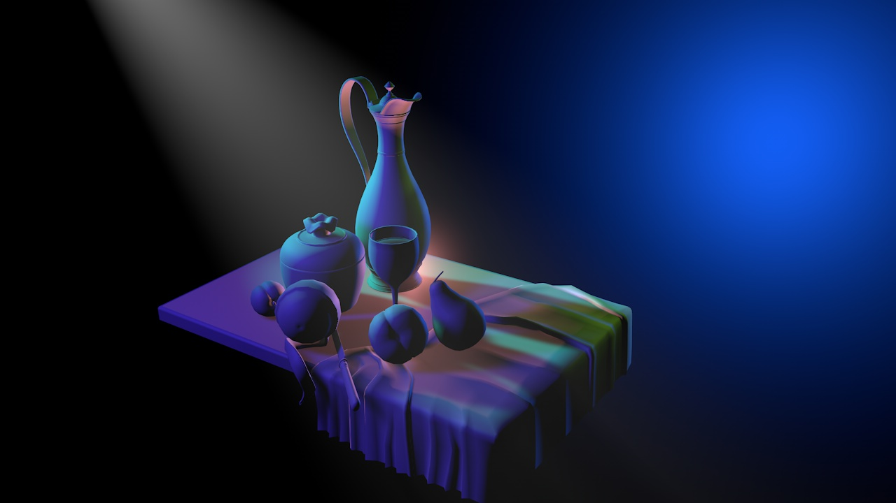

Habilidades de Giseno Grafico
Como sabran, actualmente estudio diseno grafico, curso cuarto ano y en todo este proceso puedo identificar cuales son mis Habilidadescomo por ejemplo:
- Empaques: Es una habilidad estresante y creativa 80%
- Fotografia: Es expresar atraves de una imagen, una historia completa 60%
- Ilustracio: Es una habilidad libre y creativa creando un estilo unico.50%
- Editorial: Una habilidad limitante pero desestresante. 60%
Este es un pequeno listado de todas las habilidades qwue he desarrolllado en esta hermosa carrera.
Volver a pagina anterior
